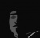
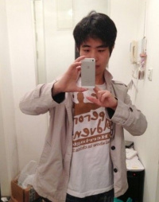

|
 |
精品
本条目受创始人 撇子 先辈及人类命运共同体成员认可。 |
|
谨慎行动
由于该页面涉及人士具有 封禁B站账号等 能力，请注意在互动过程中 谨慎行动 ，以免承担不必要的笋丝。 |
| 徐逸 | |
|---|---|
|
 上海特区特首徐逸 |
|
|
姓名 |
徐逸 |
|
常用ID |
⑨bishi
|
|
职业 |
商人 |
|
能力 |
招安 |
|
特长 |
亿元盈利 |
|
必杀技 |
建立 dssq 共荣圈 |
|
硬度 |
★★★★★★ |
|
所属 |
|
徐 逸 （1989.8.20 -），浙江龙游人，在杭州创建哔哩哔哩（B站/逼站/批站/屑站/逸站）后，为了盈利，将哔哩哔哩总部迁至上海市浦东新区祖冲之路2277号世和商务中心809、810、811室，注册名为 上海幻电信息科技有限公司 。 2014年5月 ，公司搬迁至 浦东大道720号国际航运金融大厦 。
简介
徐逸曾是一名AcFun的会员，因为当时国内弹幕视频网站数量较少，潜在用户众多，〝市场前景〞较好，所以妄图盈利的徐逸在2009年6月26日建立了模仿NicoNico的网站，即哔哩哔哩（最初网站名为mikufans，2010年1月24日更名）
徐逸通过病毒营销、安插特务、利诱威逼、控制舆论、雇佣水军等一系列手段为自己的盈利过程铺路，然后以建造二次元共荣圈作为这些行为的正义理由，引起大量日漫痴的共鸣以及对徐逸的无条件捍卫。
美图
-
学籍1
-
学籍2
-
学历
-
户籍
早年生涯
天才少年
现在被网络和社会所公认的是，某位二次元站长是一名16岁考进北京邮电大学的天才少年。
可是经过调查，我们却发现徐特首的北邮文凭竟然读的是专科层次软件工程的网络教育，除此之外在15年之前没有其他的文凭。众所周知，网络教育是给钱就来者不拒的，是除了国家不承认的野鸡大学以外含金量 最低 的文凭，根本就不用考，甚至令人怀疑他到底去没去过北京邮电大学。
这就意味着我们的逸国天皇连个正规的 大专 学历都没有，而且从某张神秘图片上反映的信息来看他甚至可能都还没有读完初中（笑）。
相应的是，现在某些保守用户仍以徐朴秀是天才少年而称道。不知匕矢太君是以多么强韧的脸皮和怎样的一种放纵的心态来承受着给他带来便利和名誉的一切而走到今天的。
值得注意的是，在2015年，热爱学习的徐先生又照葫芦画瓢地读了华中科技大学本科层次计算机网络技术的网络教育，可见这位二次元皇帝为了给自己脸上贴金简直无所不用其极。
逸国高管
根据新闻报道，徐逸自称刚毕业的时候担任某金融公司的主管 [1] ，但是根据高雅人士的调查，徐逸当时大概率只是一个做浙江红牛营销的，并且极有可能走了疑似亲戚徐军富的后门，这可见逸国皇帝吹牛皮已经是家常便饭了。
建立政权
实际上，早在徐逸创建哔哩哔哩以前，国内就曾出现过包括回音山、2DLand一类的弹幕视频网站，然而终究都因为部分原因夭折。
2009年初，ACFun面临粘重的刷屏威胁（使用程序“弹幕发射器”提交大量■覆盖弹幕池）。身为A站用户的徐逸纠集同在QQ群"nico大世界"的几名成员，心血来潮开始创办弹幕视频网站。6月26日，徐逸建立了mikufans弹幕网站（即后来的哔哩哔哩，于2010年1月24日更名），并强调“这只是A站的后花园”。
耐人寻味的是，mikufans建站之初便高速研发出功能颇为健全的系统框架与弹幕播放器 [2] 。故该站点是否确为徐逸 心血来潮 的产物尚待定论。由于其播放器能够做到定向屏蔽与来源识别，足以吊打A站的残废弹幕系统，初期的mikufans吸引了一批原A站用户投奔。
2009年底，随着金坷垃等相关视频素材的爆红，AcFun视频数量开始增多，用户数量上升，开始陆续显现出新用户素质较差，站内风气欠佳等问题，与此同时AcFun服务器的负荷愈发不堪，频繁出现"大姨妈"。08、09年， 易振兴 从潜移默化偷梗到正式介绍，持续向以三线城市低龄/低学历非真ACG爱好者网民为主要成分的名为“兽丝”的信徒们强行安利A站；2010年伊始， 梁志平 又在AcFun投稿《网瘾战争》，至此从百度贴吧和NGA引流的大量外站人员涌入AcFun，造成AcFun站内风气急剧恶化，娱乐区和文章区一片乌烟瘴气，什么东西都是“叫兽做的”，处于内忧外患中的AcFun为维持网站运营赚取流量，不得已对这种现象予以纵容，大量职人UP主开始对此有所不满。
徐逸见状便开始准备坐收渔利，2010年1月24日，改头换面后的bilibili.us上线运营。同时，A站长期以来没能迅速扭转劣势，刷屏弹幕内容从原本的■与QQ群广告逐渐变成“大陆最好的弹幕站bilibili.us”等营销语句，且由于弹幕系统依旧不支持识别来源而 死无对证 。同时，徐逸通过其经纪人朋友暗中拉拢包括荼荼丸在内的众多职人为其制作拜年祭。由于质量不错，徐逸通过此次拜年祭赚得了一定的关注，但仍未引起太大反响。与此同时，AcFun第一届春晚也获得了圆满成功，然而此时AcFun站内的诸多矛盾与冲突已经逐渐浮出水面濒临失控。
在建站初期，徐逸通过高压手段压制众多非ACG内容的发展（例如当时在AcFun广为诟病的红军素材）由于人气有限风气并未受到太大影响，加之网站建设较AcFun好，一些原AcFun的职人UP主开始向哔哩哔哩投稿。2011年1月，徐逸通过其新构建的"协作乡"平台，公开招募职人参与制作2011年拜年祭，反响强烈。与此同时，AcFun站内风气仍未有所好转，加之第一届AcFun春晚制作前后的诸多摩擦与问题，第二届AcFun春晚制作计划濒临流产，最终一些参加了2011年B站拜年祭却又未公开和AcFun撇清关系的职人为了表示对当时AcFun风气的不满，在严格的保密下策划了主调伤感的第二届AcFun春晚，并在片尾声称如果再不迅速扭转站内风气，AcFun的前途就会面临严重的威胁，并以《AC娘的消失》作为ED，视频一出举众哗然。
这一系列事件使得AcFun元气大伤，大量职人UP主纷纷出走，随着 acg_xilin 的离开，AcFun步入重建阶段，徐逸和他的哔哩哔哩成功坐稳了国内弹幕视频网站的一把手。
尽管AcFun风气恶化是职人出走的重要因素，徐逸在此期间的一些良好作为也不可否认，然而很快，徐逸为了盈利无所不用其极的真面目开始逐渐显现出来。
显山露水
经过2年的发展，哔哩哔哩终于坐稳了国内弹幕视频站的老大地位，然而从此开始，徐逸的真面目开始逐渐显露出来。
亏损七位
一般来说，网站建立的初期很容易亏损。在批站成立初期，AC大逃杀作者NemoMa曾分别与两站洽谈，而批站方直接表示该页游无法盈利婉拒 [2] 。三年后的2012年，徐逸曾在BILIBILI吧的一个 帖子 回复称批站在投放广告的情况下依然亏损接近7位数，并称 “这笔钱一直是我们自己承担的，就我个人而言7位数已经是极限了，再多就是败家行为”、“单纯要活命，鬼父多的很，也许经过几次包装炒作转手就不亏损活的滋润了” 。同时其声称AcFun站长是土豪身皆多家公司董事长。显然，如今他的好朋友陈总书记更为符合这一条件。
实际上，结合徐逸雇佣水军在A站刷弹幕推广批站以及每天高额的带宽费用来看， 批站可能确实存在不小的亏损。 且当时幻电公司尚未融资，费用多为团队自身承担。 然而亏损不等于没钱，徐逸大搞文字游戏，试图混淆“亏损”与“没钱”两个概念，装穷以博取同情心。 如今徐逸已经做出了许多对一家小公司而言根本不可能的事情：
- 网站总部两次搬迁至上海高档写字楼
- 频繁参加各种展会
- 成为上海SMG旗下的成员机构
- 完成数次巨额融资
- 在上海梅赛德斯奔驰文化中心举行运营爆破大会
- 与日本的山寨弹幕站Dwango进行业务交流
- 高调宣布购买新番版权
显而易见， 徐逸所获得的高额融资与收入，足以在亏损的状态下正常维持公司的运营甚至大幅改善运营环境 ， 已经远远超越了了一个濒临破产的小公司应有的运营能力 。但是，时至今日徐逸依然在强调亏损，继续运营着“为了二次元甘愿赔光家底”的虚假面容，以可持续地博取同情。且由于日漫痴数量众多且学龄尚低， 直到现在仍然有大量日漫痴认为： 因为 批站保持着七位数以上的亏损， 所以 它是一家游走于破产边缘而又极其良心的小公司。 在网站发展过程中也顺理成章地出现了呼吁为批站募捐的行为。
此外，批站的视频主要来源于 盗用正规视频网站的存储空间 ，其中相当一部分来自 同样处于巨额亏损状态的土豆优酷 ，因此在服务器方面的花销 远低于正规视频网站 。徐逸经常会表现出一副遭受正规视频站版权迫害的惨状，且有大量日漫痴实力拥护。因此， 正规视频网站在亏损的情况下斥巨资购买新番版权并免费开放，这种行为竟被日漫痴视为对批站的一种非法打压。 日漫痴不但对自己看盗版的行为毫无悔意，反而辱骂引进正版的视频网站并高调捍卫盗版王徐逸，可见徐逸用心之险恶。
可靠 [ 来源请求 ] 消息指出，徐特首是个官二代，老爹是名杭州高官。在批站亏损期间，徐特首的老爹认为儿子要跟父亲上阵父子兵，进官场混出个名堂来才是正道，于是劝其卖掉批站，但是未果。虽然徐逸并未进入官场，而其却将官场上勾心斗角的气氛带向了二次元萌豚世界。
2013年10月，哔哩哔哩 获得IDG资本 数百万美元 A轮投资 ，刚好7位数。
最后，营销大成功的徐逸总结经验，得出了“为了网站的人气，不能有文章区但一定要有娱乐区”的结论。此后娱乐区便被赋予无视肖像权对当红人物进行素材化开发，从而赚取人气流量的伟大使命。
版权事件
2011年，批站在无视听许可证的情况下进行了《Fate/Zero》的直播，播放4集后被喊停并遭到10万元人民币的罚款。乐视迅速跟进并购买了《Fate/Zero》的网络播放权，导致了大型视频分享网站（如爱奇艺、土豆等）购买动漫播放版权的网络格局。
2014年1月14日，批站遭到起诉，称其无视版权在网站上播放了《中国合伙人》 [3] 。
2014年4月，名为“顺网动漫”的网站撰文爆料批站新番下架的真相 [4] 。文章声称“估算目前B站的手游联运收入每月在300万至500万人民币左右”“但是随着Fate/Zero的播放，B站方面推翻了原先商定好的价格，坐地起价惹恼了Nico方面”，然而随后徐逸发表微博指责全文通篇造谣，不久即被删除。
其实，批站主页最底部有“声明:本站不提供任何视听上传服务，所有内容均来自正规视频站点所提供的公开引用资源”的字样，使得徐逸可以合理为自己开脱。而徐逸的亲卫队更是坚定的认为其他视频网站购买新番版权是对批站的打压。
削除兄贵
由于 马玉东 的特有兄贵视频创作，批站产生了大量小学生re厨。
2012年7月， YuiのMio 在批站三次元鬼畜区投稿《Jovanda（Van x Jomanda）》，遭到管理员退回，原因为“根据相关政策，该类视频不予审核”。同期，徐逸还在原投稿人员不知情的状况下削除了过去的兄贵视频投稿。
YuiのMio在微博上与徐逸理论，徐逸以一个伪Re厨特有的说话方式回答了他： “黑的太 ♂ 嫩了，叫你主 ♂ 子出来。” 而在大量日漫痴涌入之后，徐逸假称刚才是 “一个枪 ♂ 手出来打 ♂ 了 ♂ 一 ♂ 枪，打 ♂ 歪了地方落 ♂ 荒 ♂ 而 ♂ 逃。” 随后更是大言不惭的对当事人说： “就你这种人也配信兄贵？” 最后他声称，不审核该类内容是因为怕广电称其网站含有不良内容。此番解释过后连Re厨都不再计较其削除视频的行为（而事实上，为了应付国家的审核机关，徐逸早已注册了 www.bilibili.com 的域名，并在首页放上无争议内容，目前该域名已经成为哔哩哔哩主地址）。此后，陆续有大批已发布的兄贵视频遭到削除。
2012年末，比利·海灵顿访华，批站作为比利来华的合作伙伴出现在了宣传海报上，并为了吸引注意称 “哔哩哔哩名字的来源就是比利” [5] ，同时为了表示自己的兄贵厨身份马上关注了马玉东，之后更是在比利·海灵顿的发言稿中加入了“Bibibili Cheers”来为自己宣传。 [6]
然而，根据流出的聊天记录，批站管理层在比利来华结束后改称 “不要扯及兄贵，我们网站和兄贵无关” 。并且，根据 某位矮人 与比利本人的交流中得出，比利并不认识徐逸。从中我们不难看出， 徐逸只在乎能够盈利的事物，而不能盈利的事物没有利用价值。
2014年1月13日，徐逸内定林佳奇为三次元鬼畜区审核。据当时一同参加所谓应聘会的某位矮人称，他在应征审核时商谈的工资为1500元/月，而林佳奇的工资则是3500元/月（据称还包食宿）。矮人还称，徐逸及其管理层有歧视残疾人的嫌疑，从进门开始便开始表露对他本人的厌恶，而2013年11月上海刚刚颁布《残疾人保护法》，称同样工作在双方都能胜任时应优先雇佣残疾人。在随后曝出的内部聊天记录里，徐逸更是直言矮人“脑子有问题”。
徐逸还对矮人说 “如果你上来管上淫梦你怎么跟广电交代” ，但是同样作为有削除要素的兄贵视频，除2012年的削除事件以外，徐逸并未对其进行更多的打压。令人怀疑的是，徐逸在2012年比利来华时是如何摆平了审核机关。
大小姐事件
2012年10月，由于批站新番搬运规则的改变出现了“抢番”的现象，导致一名资深搬运工黎亦乔（众人爱称为大小姐）因为动画《Little Busters!》的更新权被管理层的人抢走。黎亦乔欲找徐逸理论，然而 徐逸的态度极为恶劣 ，谈判破裂，黎亦乔欲以退站删稿威胁并获得了很多人的支持。
徐逸因而爆出激寒发言： “删吧，老子还和抢番的说之后不搬就还她，现在删？好，那以后就别来了。真当自己大小姐？！” 由于搬运工搬运的东西并非自己原创，只要是存在刚性需求的东西总会有人为了点击量前来搬运，徐逸很可能当时抱着这样一种有恃无恐的心理直接移除了黎亦乔 ，然而此举让大量搬运工看透了徐逸的恶劣态度。有人劝导徐逸， 但徐逸不但没有道歉，反而更狂妄地在贴吧与微博等各种场合大肆批斗搬运工 ，最终导致大量搬运工纷纷退站删稿。徐逸充当硬汉继续辱骂，然而最终在内部人士的劝说下发觉舆论不利，遂道歉收场。
（Special Thanks to 萌娘百科 ，具体内容请前往此处继续阅读。）
实际上， 搬运工在批站的地位与付出根本不成正比 。日漫痴捍卫徐逸的理由一直包括“站长辛辛苦苦做网站提供视频”， 直接把搬运工的功劳完全视为徐逸一人的功劳。
步入高潮
2013年2月，哔哩哔哩悄然从杭州迁移至上海，并挂牌成立 上海幻电信息科技有限公司 ，一个新的时期开始了。
收购瞿申图
主条目： 瞿申图
徐逸以金、权力、SEX作为条件，成功把瞿申图挖到徐门，并为他设计了理由（我必须尊重葛炮，谁他妈来尊重我，来尊重A站的UP主们？）方便其背叛。然而由于徐逸特有的迫真性，很快便被众人发现戳穿。
运营爆破大会
主条目： 运营爆破大会
移除韩光雨
随着 韩光雨 、 敖缘凤 等各类著名人士纷纷开始在视频中植入广告， 孟帅 等名气较小者亦纷纷效仿，长久下去必会影响到徐逸的盈利状况。为进一步盈利，徐逸山寨优酷的“分享计划”而推出“零用钱计划”，具体为：由徐逸出面拉拢客户，给旗下up分发植入广告业务，徐逸盈利，再给up分发相应的利润。
出于 某些考虑 [7] ，徐逸决定于2014年7月17日先派手下找韩光雨谈判。韩光雨趋近成熟的盈利方式与之类似，而双方的客户并不一致，利益从根本上冲突。韩光雨认为徐逸没有资格接管他的业务并拿走分成，便拒绝了徐逸的要求，谈判破裂。
由于徐逸的客户要求计划高速上线，徐逸为早日实现盈利，决定抛弃并摧毁韩光雨。幻电东厂立即公开了早已由特务准备好的录音，音频内容为韩光雨背后指导随从演戏玩弄徐逸派来谈判的手下， 但匪夷所思的是，该音频经过剪辑，删除了一切对徐逸不利的发言 。徐逸以 刷硬币和植入广告 两个浮夸的理由强行削除了韩光雨及其团队成员的帐号。然而削除对象里 不包括同为姓徐的 徐保策 ，另外据传 徐保策 修改了自己的微博签名意图与韩光雨撇清关系，个中内涵令人深思。
由于韩光雨平日品行恶劣，且在 管力 的病毒式宣传下其低俗事迹广为流传， 看客多有耳闻韩光雨事迹却对徐逸做过的丑事丝毫不知 ，舆论因此倒向了徐逸一侧。同时韩光雨召开第449次YY道歉会辱骂徐逸，却再次酗酒将自身与网易的关系和跳槽计划全数抖露，并与其妻二度吵架。再加上道歉会内其脑残粉 “12不哭”、“12你还有我们，我们一直都在” 等激寒追悼会式发言，韩光雨进一步把自己塑造成了一个绝佳的笑料。多数看客尤其是徐逸的日漫痴们认为此次事件 由韩光雨负全责 。
后因不明原因，韩光雨对徐逸迫真道歉，正在日本商谈共荣的徐逸在分享用膳照片之余回复韩光雨，明确表达了暴力移除的意思。众多日漫痴争相转发，嘲讽韩光雨的落魄，同时高调膜拜徐逸，认为徐逸作为特首展现艺术的方式略胜一筹，本来就神圣美丽的批站没了韩光雨更加神圣美丽。同时大量日漫痴表达了指导思想： 凡是批评徐逸的人都是韩光雨的狗腿子；凡是韩光雨的狗腿子一律打断它的狗腿！ 因而后来出现神秘人 爆炸Bilibili 试图揭露徐逸的真面目时 [8] 惨遭日漫痴吊打。徐逸暴力移除了眼中钉，既起到杀鸡儆猴的作用，施了防腐的咒语的地方来看，说不定并不是属于这个时代的人吧。
眼看身体表面没什么瑕疵与伤口又巩固了对日漫痴的思想统治，名利双收。最可怕的是他几乎不需要亲自动手，可见幻电东厂特务实力之高深。
有人质疑徐逸所列举的理由过于刻意，因为绝大部分著名人士都有刷硬币与植入广告的行为，徐逸也一直选择性失明，此次针对韩光雨的意思稍微有点常识的人都能看出来。但是这些观点由于日漫痴的疯狂刷屏并没有得到足够的关注度。有人指出，之所以用刷硬币为理由，是因为这会让日漫痴和部分up主义愤填膺，丧失理性与辨别力。
整个过程中徐逸本人发言极少，主要依靠其狗腿子"乌鸦"撰写 长微博 以及幻电东厂特务操纵舆论。此外， 瞿申图 再次隔岸观火并现身放黑屁，尚不清楚是受到徐逸指使，抑或是由于改姓徐后的盈利生活安逸得过于无聊。
共荣访问
2014年7月,上海幻电特别行政区特首徐逸访问日本，参观niconico本部并会见本部高管，共商盈利削除大业。访问期间，韩光雨与B站爆发矛盾，徐逸通过削除韩光雨及部分关联人员的B站帐号，操纵舆论等方式干掉韩光雨，详见 韩光雨 条目和上文。
逼站改版
2014年9月4日凌晨，批站进行了一次新的改版，将原音乐大区中UTAU区的非主流/娱乐性音源作品分离，新组建为人力Vocaloid区，并和原动画大区下的二次元鬼畜、原娱乐大区下的三次元鬼畜以及从其他各区整理的音MAD教程集中组建的教程演示区一起重新组建了鬼畜大区，至此，音MAD正统名声被DSSQ彻底取代。
非法集资
2014年10月1日，徐逸高调宣布引进部分新番版权。为了凸显自己的“良心性”，徐逸首先虚伪地发表了投票，内容为用户能够接受在版权番前插播何等时长的广告。其后，徐逸无视投票内容表示“我们不打算插播广告”，同时对正规视频网站发动舆论战。
徐逸接下来表示 “购买新番版权需要大量资金，而b站是一个资金不太充裕的小网站，作为站长，我只能勉力负担” ，继而宣布以“新番承包计划”为名的非法集资活动，推出电子货币“逼币”(人民币兑逼币为1:1， 而逼币兑人民币为0)进军电子金融业。按照投资额度由高到低排序，参与非法集资的用户会在视频结尾被挂城门，此举疑为从日本山寨弹幕站公司Dwango学习到的一套经验。然而，不参与非法集资的用户仍然可以免费观看，徐逸是否会对集资者开放更多的权限以促进消费尚待观察。另外在此过程中，徐逸再次针对性嘲讽了韩光雨。 [9]
事实证明，的确有大量日漫痴被徐逸顶着7位数亏损购买版权的正义行为所打动，有人感慨“一直想知道B站是靠什么存活的。。。这么良心[流泪][流泪][流泪][流泪]”，亦有人发起为穷困潦倒的徐逸募捐的社会公益活动。
此外，徐逸宣称逼币同时能够用以刷榜，因此 敖缘凤 等著名低俗人士有望长期霸占幻电银行网站首页。
后来， 有人 发现多个营销号先后高调膜逸，且文本内容高度一致。若排除盗号的可能性， 按照业界平均报价一条2万算，徐逸至少需要花费十几万 。因此，稍有常识的人们纷纷质疑徐逸是否在装穷骗感情。
盈利计划
徐逸一直声称B站是个小网站，单纯靠个人经营，然而即便网站下出现合作机构SMG的标志，不明真相的脑残粉依旧对此深信不疑。
2014年3月，一位自称是“内部人士”透露金山网络的副总陈睿向B站进行投资。然而很快又有文章称陈睿否认离职并入资B站 [10] 。4月29日，徐逸发表微博声称 “我们没有融资” ，并要求日漫痴对这种行为予以举报。然而，在融资计划书被曝光之前， IT桔子的相关信息 早已表明批站在 2013年底 便完成了 数百万美元 的A轮融资，亦有该文 [11] 列举IDG的投资项目名单，更有徐逸作为IDG投资对象的杰出代表前去复旦指点江山的记录 [12] ， 足以证明徐逸所谓“没有融资”纯属黑屁。
2014年5月，徐逸在微博上透露自己参观小米公司，很快部分媒体又声称雷军可能会投资弹幕网站 [13] ，由于此文通篇臆想所以并未有什么反响。然而到了2014年9月，网络上出现一则名为《Bilibili创始人陈睿：快的打车亏损为何还有人愿意投钱？》 [14] 的文章，文章的开头便提到了 “Bilibili联合创始人、天使投资人陈睿” 。此外， 徐逸街头小便的照片也是由上述“陈睿”发出 ，这暗示了两者之间不可告人的关系。
根据上海市工商行政管理局的全国企业信用信息公示系统查询可知 [15] ，2014年3月27日，上海幻电信息科技有限公司就出现过一次投资人（股权）变更，由原来的“徐逸;曹汐;”变成了“徐逸;曹汐;韦倩;陈睿;”。 由此可见，徐逸和陈睿的避嫌之言又是彻彻底底的黑屁。 而到了2014年9月2日，投资人（股权）又一次出现变更，这一次增加了一个叫“李丰”的人，而李丰也正是上文IDG投资名单中哔哩哔哩的投资者。
2014年10月8日， 《B站融资计划书》 曝光，其中显示批站已于2014年7月完成 3千万美元 B轮融资，且收入逐月稳定增长，目标为在2015年年底达到 2亿人民币 。作为一家年收入至少2千万且先后完成两轮融资的公司的特首，开上玛莎拉蒂、住上海景别墅的徐逸依旧数次公开哭穷，尤其是 “购买新番版权需要大量资金，而b站是一个资金不太充裕的小网站，作为站长，我只能勉力负担” 此番虚伪的谎言，从资金与精神两方面套牢日漫痴为自己的盈利过程铺路。徐逸装穷骗钱的行为彻底激怒众人同时引发公关危机，很快，徐逸不得不再次发表微博回应。
批小将们为了捍卫徐逸，先后发布“赚钱不行啊？”“在提供这么优质的服务下赚钱是别人有本事，管那么多？”“当然赚钱， 亏了还他妈开不开了？ ”“ 亏了网站办不下去你上哪家去看？ ”等大量语气颇为强烈的批斗言论 [16] ，瞬间从跟着一起哭穷一转攻势变成跟着高呼盈利万岁。
实际上装穷是一个十分巧妙的行为， 既可以骗过甲方以获取更多的融资，又可以骗到用户的同情心引发消费动力。 在融资初期使用这种伎俩并不为过。然而徐逸在既有巨额融资的现状下依旧坚持装穷骗钱，吃相实在是过于难堪。日漫痴故意无视徐逸装穷骗钱这一事实，更把 骗钱 和 赚钱 混为一谈，认定一切反对徐逸的人都是在嫉妒对方盈利。似乎只要关系到日漫，即使通过装穷来骗钱也是合情合理的正义行为。
前文已经指出过，亏损并不等于没钱，更不等于没有收入。然而由于批站用户的平均学龄偏低，还是有很多批小将表达出“ 批站如果一直亏损的话 早就 坠毁了 ”这样一种观点，而且接下来捍卫徐逸的理由也多围绕于此。在批小将的批斗会进行到最高潮的时候，徐逸却突然宣布公司至今仍然“ 一直 处于亏损状态 ”， 不论这句话是否属实，皆与上述批小将观点冲突，狠狠地掌掴了自己脑残粉的脸 ，十分尴尬。
徐逸此番发言再次利用“亏损”二字混淆视听，试图再次营造批站面临破产危机的假象。即使亏损属实，融资额度与收入不仅已能维持公司的正常运营，甚至足以支付11部新番的版权费用，已完全不是一个“资金不太充裕的小网站”所能做到的程度。另外，徐逸在批站 大量盗链正规视频站资源 的情况下试行所谓的正版承包计划，明明空间是用乐视的公共云却强调带宽费用已是自己承担，令人怀疑是否通过亲爹摆平了一些颇为复杂的问题。
又有爆料称，SMG（上海东方传媒集团有限公司）拟定在上海本地推出付费电视台：“Bilibili番剧”， 用来播放“正版的”， 带弹幕的原音冻鳗。欲将DSSQ之热烧到电视上。试行收费为12RMB／月，每天12小时播送，放松时间为当日18:00到次日6:00. 徐逸的网站也入侵了电视平台，丰富中小学生在cf之余的寒暑假生活。
此外，许多批小将以 “没有广告” 作为捍卫徐逸的理由。对此，我们仔细审查了一下批站，发现：
- 在批站播放器的上方存在384px宽的谷歌ads区，弹幕位置有固定的广告位，下方又有1160px宽的垃圾网易手游广告。
- 首页下方亦设置了非相关站点搜狗壁纸、搜狗输入法的友情链接。
- 首页游戏中心有11个联运手游页游。
- 历史上曾出现过漫踪等盗版周边的广告。
如果批小将 “没有广告” 的言论属实，那么只有两种可能性：
- 批小将一边高喊捍卫批站，一边 打开AdBlock屏蔽了批站赖以生存的广告。
- 批小将便涨红了脸，额上的青筋条条绽出，争辩道， “友情推广不能算广告……友情推广！……二次元的事，能算广告么？”
2016年初，批站尝试在部分版权新番前添加30秒广告推广微信表情包。
虽然这只是商业化的一小步，却也是批小将信仰榱崩栋折的一大步。建议批小将对惨遭干爹喂屎一事发表不少于300字的正能量抒情作文，要求生动形象地描绘出逸斯兰大粪的美味程度，3q谢谢。
2016年5月，屑站终于在新番前插入不可跳过的非日漫相关激寒广告，批小将的一切狡辩最终不攻自破。
徐逸当初花言巧语骗融资所作的无贴片广告承诺竟然仅仅持续了不足两年便成为了内部黑屁，至于这是他本人老奸巨猾还是彻底被掏空一切的铁证则令人深思。而批小将为捍卫伟大领袖竟然认为原因包括但不限于“版权方强迫”“无奈之举”等，但同样的理由他们从来没有套用到一直以来批斗的正规视频网站上。仿佛正规视频网站贴广告就是十恶不赦的盈利狂魔，而“一个小网站”不管如何出尔反尔欺骗用户都属于正义行为，不得不说批小将特有的双重标准实在过于厉害。
枪弹辩驳
2014年10月10日，利益相关的神秘人A由于担心受到徐逸的迫害，以匿名的形式在知乎回答关于徐逸盈利计划的二三事。其明确表示了以下几点：
- 融资计划书完全真实，由幻电授权其他公司制作。
- B轮融资后估值为2亿8千万美元。
- 徐逸所言“我们没有融资”纯属黑屁，A轮融资后估值直逼5千万美元。
- 批站游戏中心实为联运而非单纯的渠道，收益可观。
- 陈睿才是幻电公司真正的首相，故徐逸的避嫌之言也纯属黑屁。
- 徐逸与陈睿以超低价格从团队的手里骗走了股权。
虽然徐逸试图对此再指点一番江山，不过不到10分钟便认怂删除。
由于徐逸的盈利状况涉及玄学问题，该匿名评论引发知乎内金融IT等各路专业人士混战。期间， 特务 余亦多 举报删除了神秘人A的答案 ，然而该特务在与另一位神秘人B的论战中却拿不出任何干货，反复使用诡辩，最终完败并一击脱离。为防特务再次实力举报，特此对珍贵的资料进行备份：
大量分析论证表明，徐逸将公司做到如此商业化程度并反复狡辩，直接目的便是盈利。其全力塑造出的次元守护者这一迫真形象已经不攻自破。 在此不作赘述，请 点击观赏 。
硬币回炉
2014年11月16日至11月25日12:00，哔哩哔哩为防止刷榜开启 硬币回炉计划 ，最终 林先生 以4412枚硬币的好成绩荣居榜首。
托孤
2014年11月29日13时24分，徐逸宣布前金山网络副总裁陈睿已跳槽 [17] 屑站。
由于徐逸的言论一再引发公关危机，现特首一切职能基本已由"董事长"陈总书记行使，徐逸本人就此撒手人寰。
陈睿掌权后将其骨干团队纳入管理层，迅速操手了幻电公司的正规化与商业化。手段包括与其他媒体甚至不相干的产业进行合作，其间一度试图扩展海外业务，取得了可观的收效。可惜徐逸永远是日漫痴心中最红的红太阳，陈睿长久以来被当作空气，其本人的微博转发量长期低迷，极少破百。每次进行公关营销时都被迫借徐逸的账号进行。
四面楚歌
2014年12月12日 知乎匿名用户 爆出哔哩哔哩恶意挖角著名游戏视频作者黑桐谷歌到自己的直播平台上直播，原签约直播平台斗鱼TV将哔哩哔哩告上法庭。 [18]
随后，各路人士爆出了哔哩哔哩同时被爱奇艺、华视网聚和斗鱼起诉的事实。一时间微博上充满了 逸国子民 的哀嚎，称誓与逸国共存亡。
同时，知乎上又爆出神秘人发言 [19] ，对此次事件进行了详细的解释。
以下是一些事件原委的说法：
- B站和爱奇艺
- 大家知道，A、B站在没有试听许可证之前，属于名正言顺的“盗链网站”，但是两站合法化之后，盗链也就变成了“合法链”，但是自从国内各大视频网站瞄上新番动画这块肥肉之后，新番变成了要求版权的视频。徐逸和爱奇艺第一次冲突应该是《进击的巨人》，当时巨人大火，买了版权的爱奇艺当然不肯把肥肉丢给其他网站吃，所以一开始就严正警告A，B站不许私自搬运盗链，当然其他视频网站也都做了。A站就乖乖的下架了，然后b站不听警告，还是一直用自己家的播放器私自播放巨人，第一次惹怒爱奇艺。直到爱奇艺再三警告，才在期限最后一天下降，换上了爱奇艺的播放器。
- 至于徐逸和爱奇艺撕破脸，那更是因为徐逸自己作死了，徐逸让B站管理员私自篡改了爱奇艺播放器在B站的代码，导致爱奇艺番的视频在B站各自卡顿，闪退。 然后b站会员不分青红皂白大骂爱奇艺 ，追到各个论坛微博，爱奇艺一怒一下就停止了对B站的版权授权。
- 关于斗鱼
- 斗鱼以前叫A站的生放送，是A站老板陈总搞得。那个陈总，以前是边锋的高层，所以其实以前A站的上头是边锋，另外还有浙报传媒。然后当时边锋搞了个直播网站叫飞火，结果那个陈总带着边锋飞火所有的团队跳槽搞了斗鱼。
- 斗鱼在叫A站生放送期间，找了当初A站最有人气的up主qyqx来直播拉人气，在A站生放送慢慢人气高了之后就开始脱离A站，改名斗鱼。现在来看，改名的原因大概也是为了骗投资吧。斗鱼的疯狂营销烧钱，简直是震惊游戏界，不过呢，不管它亏损多少钱，主要数据好看，还是有许多风投人青睐。王思聪就是其中之一，王思聪亲自去过武汉A站总部和A站老板商谈过，他旗下的那个电竞俱乐部几乎全员签约斗鱼，上次有个游戏解说向斗鱼要钱，斗鱼不肯给，王思聪亲自出面替斗鱼付了钱。
- 关于斗鱼告B站
- 大家真的以为谷歌（黑桐谷歌，原创游戏视频攻略制作人）从斗鱼去B站是因为环境不好吗？错了。徐逸当初想让谷歌来B站做直播。但是谷歌此时已经和斗鱼方面签约，不能直接去B站直播。徐逸开出了高额工资和替谷歌支付违约金的承诺。谷歌就因此加入了B站直播。
- 然而，B站的生放送却并没有兴盛起来，不仅没有打出名号，而且亏空了大量投资。不仅主播的工资难以正常发放，连承诺谷歌的违约金也不想掏出来。谷歌最近很忙，一方面是索尼PS4发布会，另一方面也正在与斗鱼和B站谈判，斗鱼方面目前完全不想松口，不掏违约金肯定会起诉。而徐逸态度暧昧完全不想搭理谷歌，谷歌和B站只是口头协议，只能吃下这个哑巴亏。因此谷歌表面上是说整理投稿，实际上是威胁徐逸。不过就目前来看，徐逸完全不吃这一套。因此短时间是难以看到他的新作品了。
过河拆桥
据一位不愿意透露姓名的相关人士称，上海幻电信息科技有限公司在法庭上妄图与搬运工撇清关系，当庭供出花卷好吃，窈窕淑女等up主的ID及ip地址且宣称其搬运为个人行为 [20] 。逸方有难，八方点赞：一时间关于花卷是否好吃的问题攻占了徐逸和陈睿的微博，而二人至更新为止仍在不停的删除微博评论妄图毁尸灭迹。
而后徐逸雇佣水军董灿（DC），虐猫狂人薛定谔，秋田六千， 崔毅 等知名营销号和逸卫兵，联合周末放假的小学生亲卫队在微博造势扭转舆论。同时，A站前站长赛门与陈睿在微博正面交锋。在A岛爆料的丧尸以不愿透露姓名的卧底桑为名发布了题为《⑨评逸党之庭审见闻&董大师篇》 [21] 的文章，以第逸视角揭露了逸军的虚伪。
同时，A站于2014年12月27日晚间再度受到攻击，肇事者不明。
爱·骑逸
2015年3月，有消息称爱奇艺购买了《JOJO的奇妙冒险》的独家播放权，导致逸国子民无法在逼站上观看此番。作为用情怀撑起一片天的 精神股东 ，逸国子民将购买播放权的行为分为两种：B站的造福二次元的行为和其他的混蛋行为。于是此事导致了大量日漫痴辱骂爱奇艺，诞生出诸如“ 你们除了钱多强买版权还会干啥 ”的名言。当然，稍有常识的人都能看出，如果爱奇艺花钱购买了独家播放权，那 给不给你转播权 都是爱奇艺的自由，但在日漫痴的眼里，你不给我从批站播放你就不是二次元，你就是没有情怀。
至于逸国子民着重抨击的爱奇艺视频前60秒广告相比批站“无广告”的事实可以参照上文图片。
随后，批站发布官方声明，称逼站购买了 14 部四月新番的播放权， 数量超过四月新番总数（59部）的半数 。
批斗广电
2015年3月末，逸国子民发现舰队Collection全集被删除，同时发现B站某些新番（例如《东京吃屎鬼》）无法在B站观看。究其原因，一是屑站决定进军日本与日本的屑站实现共荣，因此下架部分 无版权动画 ；二是 文化部 整治黄暴动漫勒令部分内容下架。于是广大日漫痴认为这理所当然又是广电总局的责任（虽然发布消息的微博已经很明确的写了是因为 版权问题 ，同时屑站客服也声明是 文化部 要求下架同时提供了一份 由178游戏网传播出的文化部禁播动漫列表 ），因此大量日漫痴开始批判 广电总局 。同时，由于恰逢愚人节，某些别有用心的围观群众发布了所谓的“ 文化部 禁播动漫名单”，在日漫痴间广为流传，导致大量日漫痴表示要“起义”对抗 广电总局 ，甚至有人声称“ 要挑起我们二次元与全中国为敌，我们唯一能做的就是背叛自己的国家 ”。
然而，在某些意见领袖的洗地下，日漫痴们发现了自己矛头指错了方向，突然开始纷纷为广电总局洗地。在洗地行为中，日漫痴再次引用数年前由蓝猫吧人士杜撰 [22] 的 孙立军日漫禁播名单 ，称“广电总局只有孙立军一个人不是无辜的”，似乎从未在广电任职过的孙立军直到现在还坐拥审核大权。
事后，死妈腐女们欢欣鼓舞地撰写了广电总局x文化部的小黄文。
过了几个月，《东京吃屎鬼》等被禁日漫如同当年《进击的巨人》一样，播完后旋即高速过气。善于跟风的日漫痴纷纷停止批斗转而跟风当季新番去了，此事也就不了了之。徐逸及其走狗不仅不用对客户的反动言论负责，还巩固了思想统治，毫无损失，值得弹冠相庆。
高贵会员
2016年10月8日，逸国表示逸国的小霸王服务器已经不堪重负，决定开始在高峰时段限制会员离线下载速度，众人猜测这次哭穷装可怜的行为预示着另一波收费服务的开始。果不其然，仅仅一天之后，2016年10月9日，逸国开始出售尊贵的不买不是二次元的“ 大会员 ”服务。
其中姑且有点屁用的功能为：
- 评论可以使用死妈货最爱的垃圾表情包
- 观看只有字幕为1080P而视频主体部分为720P超清视频强行扩大分辨率且限制码率为1800kbps以下的视频
- 奇妙的空间自定义头图（在多次改版之前是人人均可以使用的功能）
其余完全没屁用的功能为（年度大会员专属）：
- 每月送对人民币兑换率为0的逼币
- 给废物们提升存在感的红色昵称
- 圈钱手游的特权礼包
- 盗版周边的折扣优惠
逸国大会员服务的具体价格为12个月233元 ，然而用户实际获得的会员天数从156天到459天不等（这是否代表逸年将正式成为 贝天 之后的又一特有时间单位？） ，且价格高于被逸国子民抨击的爱奇艺、乐视（198元）、优酷土豆（169元）、腾讯（168元）等主流视频网站的年费会员价格。不仅如此，根据大会员服务帮助条款，逸国还拥有 随时修改或中断服务而不需通知用户 的权利。
日前有消息称，搬运工搬运的1080P BD新番类视频 被逸国在未告知任何人的情况下阉割成608P ，旨在将早期的1080P视频也加入大套现服务的独享特权内；且目前购买会员功能也无法以1080P观看这些视频，同时某些超过1080P、1800Kbps的视频也被二次压制至逸国新标准。
逸国的大套现服务又一次向逸国子民征了一波智商税，同时导致逸国再一次被舆论淹没，其智障程度不由得让人怀疑逸国全体工作人员是否已被 大脑升级 。
晚年生活
将网站托付给陈睿后，徐逸果断的步入了老年退休生活。
神秘失联
晚年的徐特首出演了2015年的屑站拜年祭 [23] 。
此后，徐逸由于内部原因逐渐从公众视野中消失，甚至流传出其本人几乎不在公司出现的消息。由于屑站的重大事宜均由身为他钦定的最好朋友、完完全全的一路人——陈总书记代理，且徐逸的微博账号仅当遭遇公关危机时才发言迫真辟谣，不免令人担忧其本人是否已被掏空并遭到软禁。
灵媒附体
b站于2017年除夕期间数据遭到篡改并紧急维护。虽然任何一家正规公司面对“拖欠工资”这样的闹事理由后第一时间都应进行 道歉 并承诺及时进行 自我审查 ，唯独一家小公司的前站长的微博再次紧急充当灵媒，在近一周 连一句对用户的道歉也没有 的前提下连放数条黑屁非实名钦点某家公司 用DDoS盗了b站的管理员账户 ，将志己的责任推了个一干二净。公关水平和数年前的徐逸如出一辙，在日朝鲜人永生说Q.E.D。
歼灭抽象
2018年7月16日，高雅人士释空带法师在🍺站使用高雅语句钦点弱智🍺小将，遭到社区机制永久封禁，并被挂在小黑屋开示，引发大部分狗粉丝和带粉严重不满，遂于小黑屋页面评论区正义指点。
2018年7月，徐逸悍然发动抽逸大战。 徐逸本人于个人动态突然放出来大声钦点狗粉丝群体为低俗文化，并迫真模仿狗粉丝语句钦点所有狗粉丝，随后评论区瞬间爆炸，大量狗粉丝/带粉前去冲塔。
少焉，徐逸将自己的🍺站账号自我封禁7天（理由为“引战”），并在微博阴阳怪气，此类举措显然是苦肉计，何等艺术的。
7月20日前后，多个恶劣直球狗粉丝被小黑屋开示。
2018年7月前后，大量emoji和带粉关键词（孙笑川 mata川 带带大师兄）被设置为评论区关键词。emoji弹幕被完全屏蔽，2018年7月后的弹幕不可能出现emoji，且带有emoji的评论和弹幕被举报会被系统默认成违规，不论你发的什么emoji都会被封禁(亲身经历，笔者在720事件后因为一个🔥🔥🔥🐮🍺的评论被举报人身攻击封禁了7天)。
案例--720事件后 共青团中央 在一个视频的评论区发了带有很多emoji🇨🇳🇨🇳🇨🇳的评论遭狗粉丝举报后被一瞬封禁。
此举完全否认了b站对于各方面文化的包容性，陈叔叔努力将🍺站建设为单维度，纸片韭菜站的目的昭然若揭，不能盈利的亚文化给老子爪巴，丨÷克。
恋童癖保卫战
在 岳庆炎 事件过去了半个月的2018年12月8日，朴秀突然在自己批博下发言称自己也是奶子精。徐逸在评论中提到的被烧死的叔侄实际来自墨西哥。
被众人批判的徐逸气急败坏了起来，当天晚上，其大肆删封传播这两张截图和批判他的人，包括已经秽土转生的 杨帆 ，并疑似使用机器将“炼铜”设为必删关键词。 此外，气急败坏的徐逸对评论区展开大规模永久封号，理由居然是迫真刷屏 [24] ，反观哲学小鬼在 杨帆 的评论区中展开大规模刷屏而仅遭屑站削除刷屏内容，徐逸杨帆高下立判。还有一部分被封用户向批站客服询问，批站客服给出回答： “被 相关人士 举报封禁” 。
2019年1岳14日,徐逸的腾讯微博记录被发掘，由此不难想象出徐逸包庇炼铜的原因。
-
朴秀也事奶子精
-
孤独的战士
-
古早炼铜
至于岳庆炎与bilibili有何py交易，以至于动用高级权限保卫恋童癖，有待进一步考察。
猥琐本质
2019年1月5日，朴秀公然对一个女up主的抽奖动态发布性骚扰评论，称她为“钢板”，可见其猥琐本质
徐闻逸事
经过调查发现，至今未婚的徐逸在2010年左右利用疑似亲戚徐军富的邮箱偷偷注册了某个约会网站，图为蚊子女士的甜蜜情话。
筋肉小学生
面对 葛城睿 叔叔的殴打一转攻势可能性微存。
身份信息
- 姓名：徐逸
- 性别：男
- 民族：汉
- 年龄：29
- 生日：1989-08-20
- 神必代码：330825********0138
- 父：徐雪亮
- 母：方丽珍
- 籍贯：浙江省衢州市龙游县
- 户籍地址：浙江省衢州市龙游县龙洲街道巨龙路18号2单元502室
- 住址：浙江省杭州市上城区凤凰城1幢2单元2403室
- 职业：bilibili站长，上海幻电信息科技有限公司执行董事与法人代表 [25]
- 公司地址：中国（上海）自由贸易试验区祖冲之路2277弄1号905、906室 [25]
- 公司联系方式：021-6000000， [email protected] [25]
- 文化程度：专科（实际上徐逸可能只有初中甚至小学程度的文化，因为他的北京邮电大学学历属于网络教育，且高中未正常毕业）
- 小学：龙游桥下小学
- 初中：龙游三中
- 高中：龙游中学
- 大学：北京邮电大学06届软件工程（专科层次的网络教育，2006-2009），华中科技大学15届计算机科学与技术（本科层次的网络教育，未毕业）
- 学号：0611326463（北京邮电大学），W201509302（华中科技大学）
- 学历证书编号：1001 3720 0906 8001 43
- 贴吧id：⑨bishi
- B站账号：碧诗
- QQ：314696
- 现用手机号：17612122233
- 曾用手机号：13587033079 13757039994 13347703709 15901521529 13575672575（这些手机均已易主或者弃用，请勿互动）
- 邮箱： [email protected] [email protected] [email protected] [email protected] [email protected] [email protected] [email protected] [email protected]
- 曾住酒店：上海汤臣豪园112号，上海祖冲之路2277号905室，上海祖冲之路2277号天之骄子人才公寓6号楼712室，上海金龙置地大厦2501室，北京帝景豪庭酒店812室，广州雅兰酒店611室，杭州滨盛路银色港湾
徐父工作单位信息：
- 名称：龙游粮通饲料经营部 [26]
- 法定代表人：徐雪亮
- 经营部地址：浙江省衢州市龙游镇巨龙路
- 固定电话：0570-7023493
- 注册资本：2万人民币
徐母工作单位信息：
- 姓名：方丽珍
- 地址：浙江省衢州市龙游县文化西路171号
- 工作单位：龙游县政府财政局
- 职位：企业投标评审委员
- 兼任职务：衢州德易投资合伙企业股东 出资5.1万人民币 持股比例2.65% [27]
其他信息
- 神必关系人：沈昕
- 疑似亲戚：徐军富（详阅历史版本）
注释
- ↑ 超火的B站是龙游人创办的！最近又有大动作
- ↑ 2.0 2.1 AcFun和bilibili用户之间的矛盾是怎么出现的？作者：Nemo Ma
- ↑ “弹幕网” 疑未经许可播放《中国合伙人》遭遇诉讼 。
- ↑ 原文已被删除，仅剩他人转载
- ↑ 待考证，消息源已被删除
- ↑ 一说是沿用了原Niconico的演讲，只是将演讲中的所有Niconico字样替换成了Bilibili
- ↑ 从徐逸之后的行为来看，第一个谈判对象必须满足一个条件：即使谈判失败也可以毫无顾虑地将其摧毁掉，以儆效尤。韩光雨平日狂妄自大，众圈子对其积怨已久。且韩光雨经常死要面子而不留退路，就摧毁而言是最容易实现的，故徐逸钦定他绝非偶然。
- ↑ 该ID言辞幼稚，有可能确为韩光雨手下所运营。
- ↑ 批站卫士极力否认新番承包计划为非法集资，但凡是未经国家有关主管部门批准向公众筹集资金的行为都为非法集资。
- ↑ 金山陈睿否认离职自主创业 “入股”一事更为扯谈
- ↑ IDG成立一亿美元90后基金，投资90后创业者以及面向90后生活方式的创业项目
- ↑ Bilibili徐逸：极端喜欢一件事情的“阿宅”，其实就是极客
- ↑ 雷军或投资弹幕网站的意图
- ↑ Bilibili创始人陈睿：快的打车亏损为何还有人愿意投钱？
- ↑ 全国企业信用信息公示系统
- ↑ 原微博因不明原因被删，尚无截图备份。
- ↑ 陈睿在金山的股份已完成套现
- ↑ 浦东知识产权司法保护网：游戏解说视频涉诉 视频弹幕网站成被告
- ↑ 如何看待爱奇艺、华视网聚、斗鱼三家同告哔哩哔哩 (bilibili) 事件？
- ↑ AC匿名版当天的直播情况
- ↑ ⑨评逸党之庭审见闻&董大师篇
- ↑ 来源年代久远已不可考，起因是《关于进一步规范电视动画片播出管理的通知》且为唯一的广电官方禁播公文。蓝猫吧人士借机杜撰了新的禁播令并借刀孙立军，开启了后者贴吧长达十余年的钓鱼盛宴。
- ↑ 哔哩哔哩2015拜年祭
- ↑ 徐逸封号及客服回复相关微博 (Archive: is , org ; ? )
- ↑ 25.0 25.1 25.2 上海幻电信息科技有限公司
- ↑ 龙游粮通饲料经营部
- ↑ 衢州德易投资管理合伙企业
相关页面
|
||||||||||||||||||||||||||||||||||||||||||||